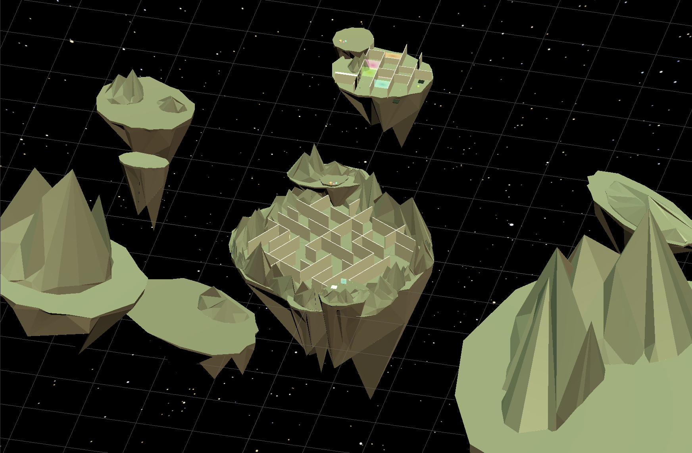
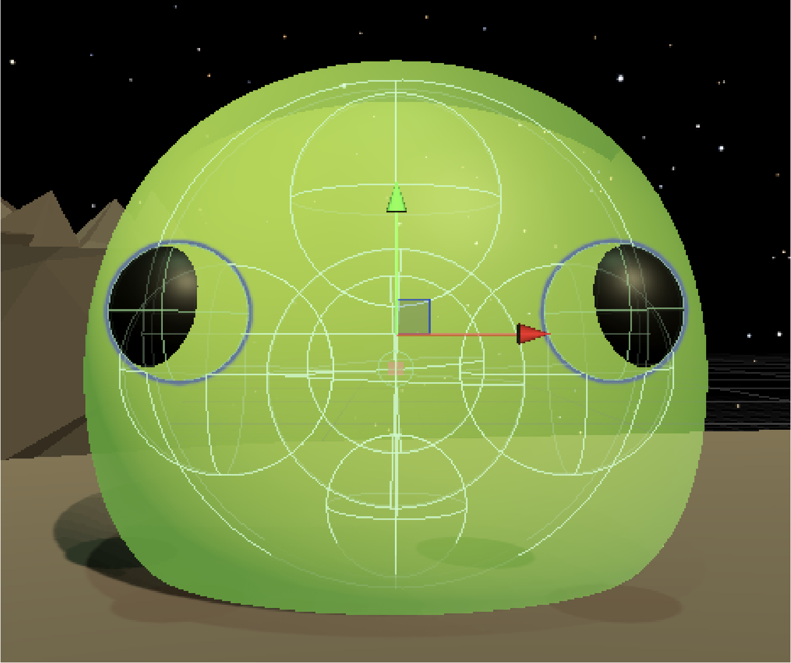

Blob Bob
PRIMARY TOOL • SECONDARY TOOL • CONTEXT / THEME
Overview
Bob the blob has been separated from his blob family! Help him navigate an ever-changing maze with his unique blob powers.
Developed in Unity and programmed in C# to demonstrate puzzle mechanics. The player is presented with 3 distinct powerups: grow, shrink and color change. Growing allows the player to jump over tall objects, whereas shrinking lets Bob slip through small spaces. Certain areas of the maze are marked by color-coded transluscent barriers. When Bob is the same color as the barrier, the player can 'morph' through the correlated wall. This encourages a distinct sequence of interactions to solve puzzles and escape the maze!


Click image to view gallery
Character Design
Blob Bob's character was modeled in Blender, using several bone armatures to provide some sense of rigidity and maintain shape. This model was then imported to Unity, where it's translucent material and shading were created.


Click image to view gallery